Vivado
1. Vivado
1.1. Creating your own AXI IP
1. Open Vivado and create a project. In this example, we will create a project named project_1.
2. Create IP
Click on Tools -> Create and Package New IP
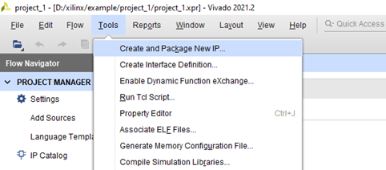
Select Create a new AXI4 peripheral
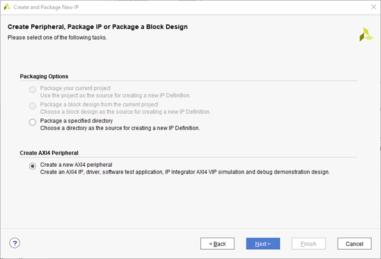
Set an appropriate IP name. In this case, it will be myip
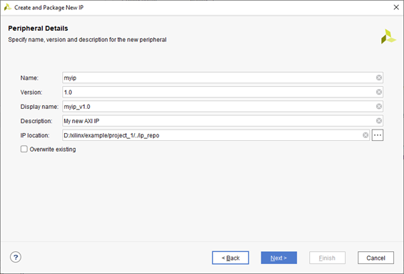
You can add an AXI interface in the Interface section and set the number of registers. This time, we will create a simple IP using this setting (AXI lite)
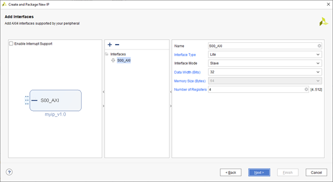
If Verify Peripheral IP using AXI4 VIP is selected, the system will automatically generate a simulation environment.
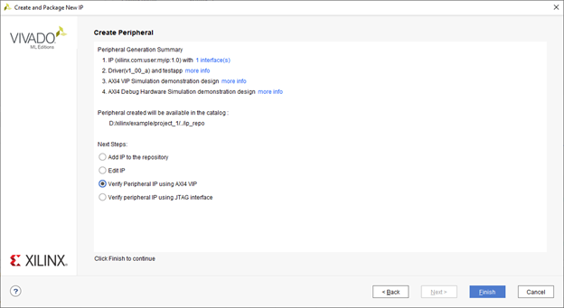
Once the environment is configured, the simulation will be created as shown in the image below.
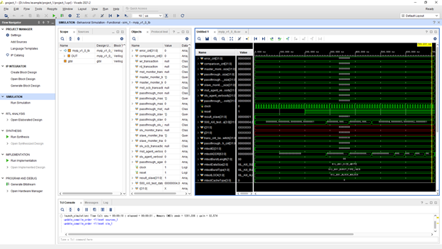
Then myip_v1.0 will be added to the IP Catalog.
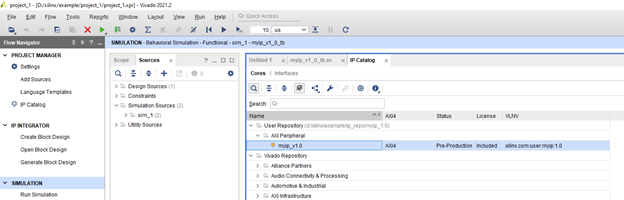
※ To change the IP for simulation, right-click the simulation file under Simulation Source in Sources and select Set as Top. Then right-click Sim_1 in Sources and select Run Simulation -> Run Behavioral Simulation.
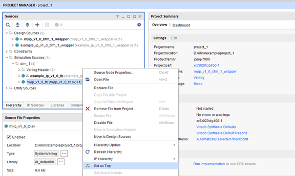
1.2. Editing the created IP
The HDL file of the automatically created IP will be saved at ./ip_repo/myip_1.0/hdl
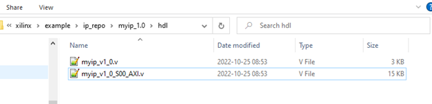
As an example, we will add an output port myip_out by adding an output in the myip_v1_0_S00_AXI.v module as follows:
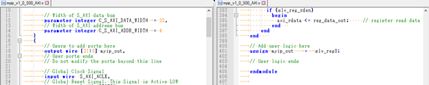
※ The HDL language generated will vary depending on the vivado project settings. It can be set at Settings -> General -> Target language
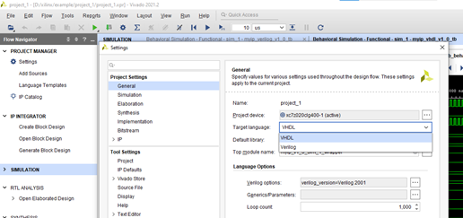
Then, add the myip_out output port in the myip_v1_0.v module as follows:
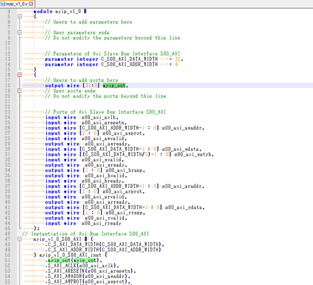
In the IP catalog, right-click myip_v1.0 and select Edit in IP Packager
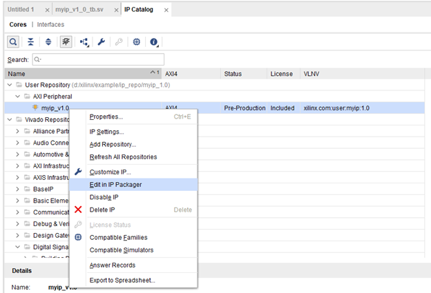
Just click OK
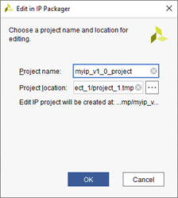
Then, another vivado window will open automatically. Click on Ports and Interface and click on Merge change from Ports and Interface Wizard
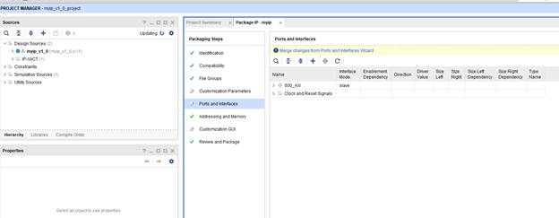
Click on Review and Package, then click Re-Package IP to update the IP. After that, close the Vivado used for editing the IP and return to the main Vivado project.
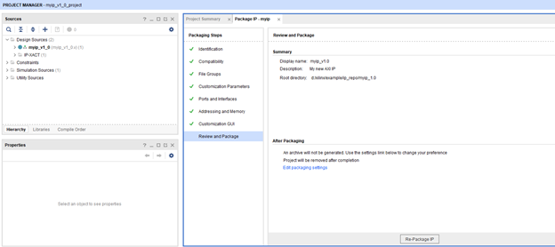
Double-click myip_1_0_bfm_1_i in the Sources of Block design.
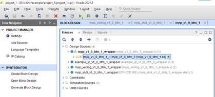
Click Show IP Status and perform Upgrade for myip_v1_0_bfm_1
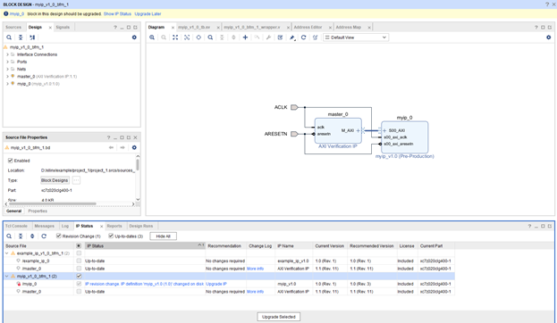
Then the myip_out port will be added. Right-click myip_out and select Make External.
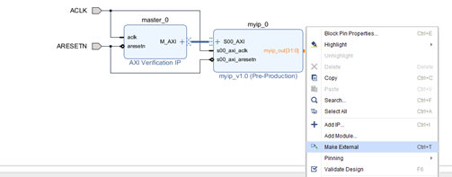
To restart the simulation, right-click sim_1 in Sources and select Run Simulation -> Run Behavioral Simulation.
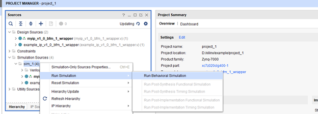
Then myip_out will be added to myip_v1_0_bfm of the DUT.
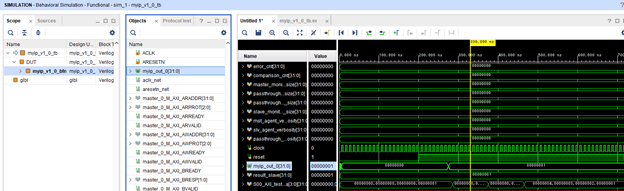
1.3. Editing the Testbench
The simulation Testbench is written in project_1\project_1.srcs\sim_1\imports\bfm_design\myip_v1_0_tb.sv. If you add the following Read and Write commands to the file, you can modify the simulation sequence.
mst_agent_0.AXI4LITE_WRITE_BURST(32'h00000000, 0, 32'h12345678, mtestBresp );
mst_agent_0.AXI4LITE_READ_BURST(32'h00000000, 0, mtestRDataL, mtestRresp );
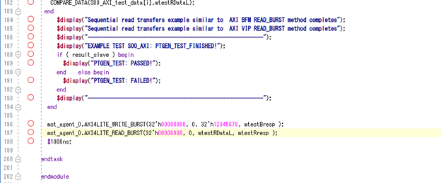
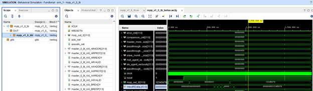
1.4. Connecting to Zynq
Click on IP INTEGRATOR -> Create Block Design
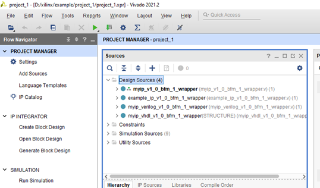
Name the Block design. In this case, we will name it design_1
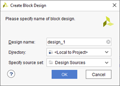
Click ADD IP and add zynq
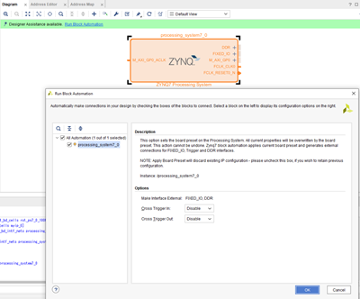
Click ADD IP and add myip
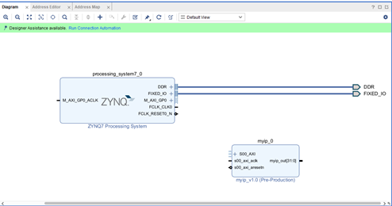
Connect Blocks (If you click Run Connection Automation, the system will connect automatically, but you should verify again after connection)
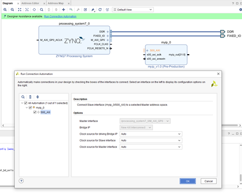
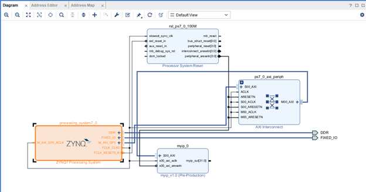
In the myip Block, right-click myip_out and select Make External. The system will automatically create an external port out of the Block.
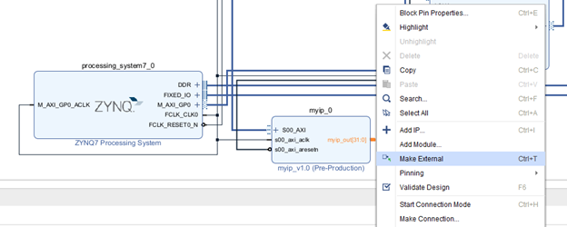
Define the address space of myip in the Address Editor
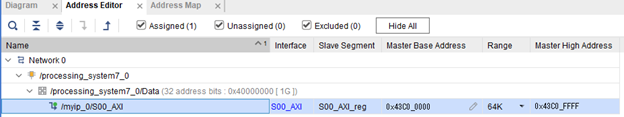
In Design Sources of Sources, right-click design_1 and select Create HDL Wrapper to automatically create a wrapper of the Block design.
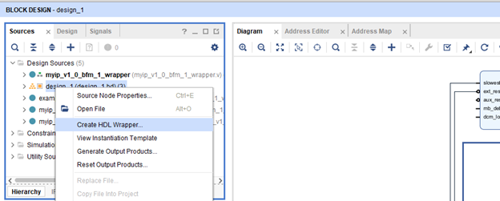
Create a TOP file of the FPGA and connect it to the wrapped Block design. In this case, we will create the file prj_top.v as the TOP file
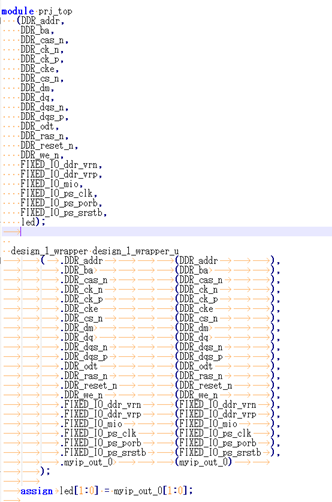
Add prj_top.v to Vivado, then in Sources -> Design Sources -> prj_top, right-click and select Set as Top
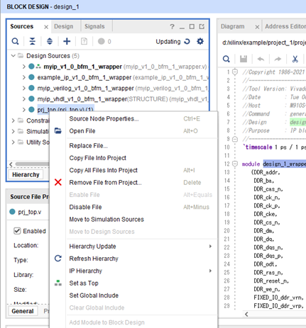
1.5. Simulating IP using Zynq VIP
Create Testbench using zynq_tb.v (please refer to the attached example.zip)
The operation of Zynq VIP is
When writing data from Zynq to IP
ใช้ xxx.inst.write_data(32'h43C0_0000,4, 32'h12345678, resp);
When reading data from IP to Zynq
ใช้ xxx.inst.read_data(32'h43C0_0000,4,read_data,resp);
(xxx will change depending on the design hierarchy. In this design it is
tb.prj_top_u.design_1_wrapper_u.design_1_i.processing_system7_0 )
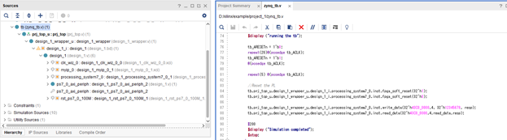
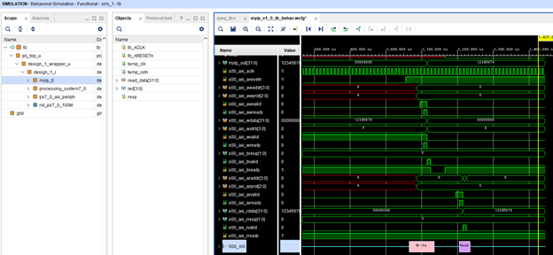
1.6. Debugging on real device
Vitis IDE
Actually, when doing 1.1 Creating your own AXI IP, Vivado will automatically generate the following example source code
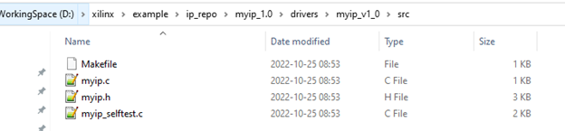
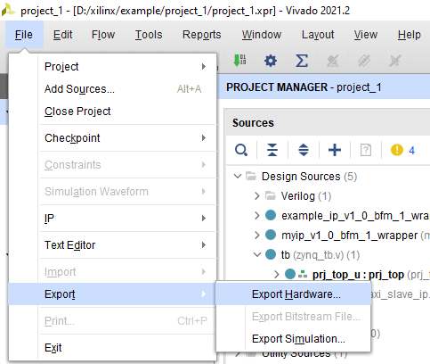
Select Include bitstream
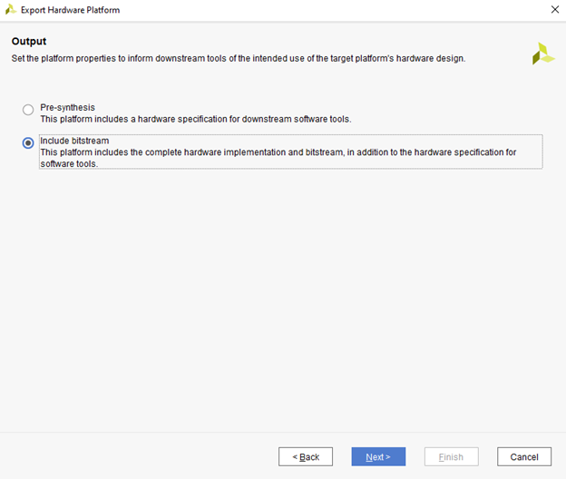

Set Workspace

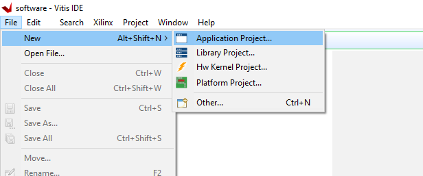
Just click Next
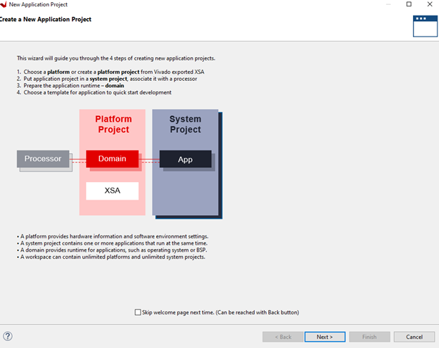
Click on Create a new platform from hardware(XSA) and use Browse to select the previously created .xsa file. Then click Next
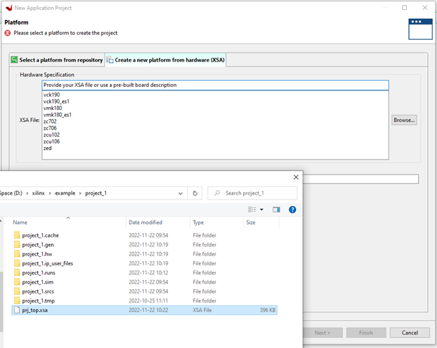
Specify the application name, then click Next
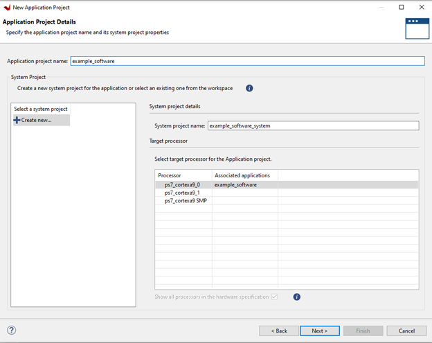
Just click Next
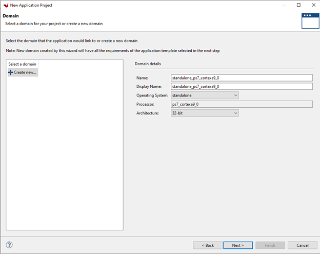
This time it is a simple register operation, so select Empty Application(C)
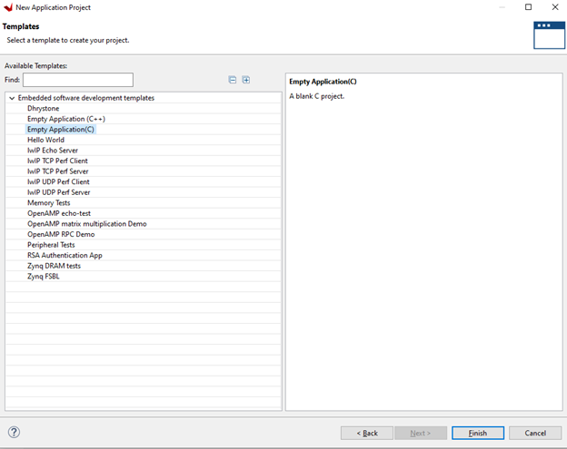
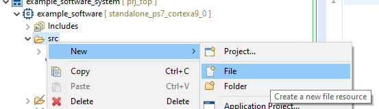
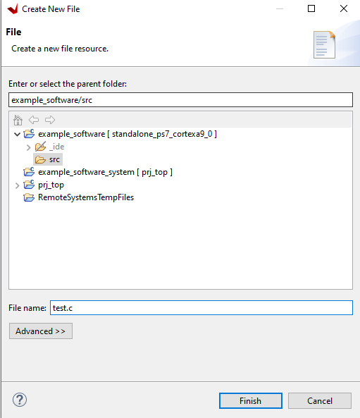
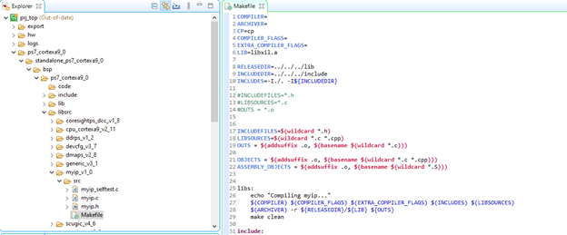
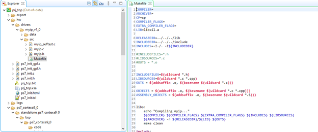
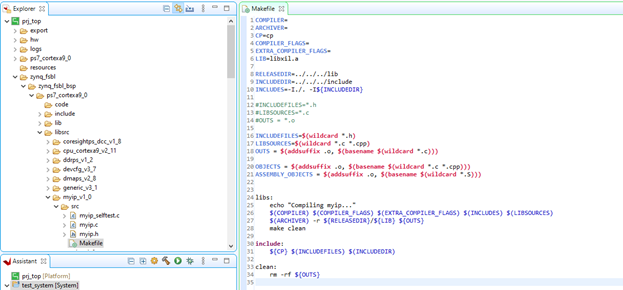
#INCLUDEFILES=*.h
#LIBSOURCES=*.c
#OUTS = *.o
INCLUDEFILES=$(wildcard *.h)
LIBSOURCES=$(wildcard *.c *.cpp)
OUTS = $(addsuffix .o, $(basename $(wildcard *.c)))
OBJECTS = $(addsuffix .o, $(basename $(wildcard *.c *.cpp)))
ASSEMBLY_OBJECTS = $(addsuffix .o, $(basename $(wildcard *.S)))

1.7. Verifying IP with Chipscope
Run SYNTHESIS once
Then, click SYNTHESIS -> Open Synthesized Design -> Set Up Debug
Click Find Nets to Add, search for the signals to capture, and register them
In the Clock Domain column of each signal, right-click and select Sampling Clock
Then, run until Run Implementation and Generate Bitstream
Click Open Target, then click Auto ConnectClick Program device to configure the FPGA on the PL side of Zynq
Set up Trigger setup just like a Logic Analyzer
Perform Run. When a Trigger is detected, the waveform will be displayed as shown below
1.8. Advanced trigger
[FPGA Verification Tips] Try making good use of Vivado™ Logic Analyzer (How to use Advanced trigger) ~Preparation and Overview Edition~
https://www.paltek.co.jp/techblog/techinfo/231127_01
1.9. Introducing Jupyter environment for debugging custom IP on real device
Debugging a custom IP on a real device requires U-Boot or debugging software, but creating debugging software requires a lot of preparation. Here, we will introduce a simple debugging method using the Jupyter environment
"Jupyter Notebook" is an environment where software can be developed on a web browser (mostly on the PC side). However, in the case of Zynq devices, there is a project called PYNQ which is a framework for using FPGA with Python. Linux will run on the processor (PS) side of Zynq and Jupyter will run on it, allowing you to configure the FPGA (PL) side with Python via a web browser.
Boards that support the PYNQ environment are listed at http://www.pynq.io/board.html
The environment setup is as follows: Place the board to be debugged (Zynq) on the same network as the PC via a router. Then connect the JTAG debugger from the PC via USB to the debug pins of the Zynq device, and connect the Linux console to the PC via UART.
Debugging method
1. Power on the board to be debugged, then wait until Linux finishes booting. Then type ifconfig to check the IP of the Zynq (Example: You will get an IP like 192.168.1.55)
2. Open a browser on the PC and enter the received IP (to access Zynq). The initial screen will ask for a password; enter "xilinx"
3. Return to Vivado and click Program device to configure the FPGA on the PL side of Zynq
4. Return to the Jupyter screen and click New → Python3
5. Enter the following script so you can freely access the registers on the FPGA (PL) side
Mmio = pynq.MMIO is used to set the address and access space of the register
mmio.write is accessing the register to write data
mmio.read is accessing the register to read data
※ You can check the waveform with chipscope to see if the register is actually being accessed
※ In case of developing the board yourself, it is necessary to port in order to use the Jupyter environment, which takes time. However, if successful, you can freely access the registers with a Python script according to the method introduced above, making hardware debugging much more convenient.
1.10. Others 1: Routing AXI bus outside Block design
To add a port for the AXI master bus, increase the number of Master Interfaces of the AXI Interconnect (change from 1 to 2)
This time, in order to get AXI Lite, we will add a conversion from AXI to AXI Lite using AXI Protocol Converter
Double-click the AXI Protocol Converter and set the Address width. This time it will be set to 12bit
Right-click on M_AXI of AXI Protocol Converter and select Make External
Then, the M_AXI_0 bus will output signals outside the Block design
Configure the Address Map for the AXI bus (M_AXI_0) to be output outside in the Address Editor
To route CLK and reset signals outside the Block design along with the AXI bus, create CLK and reset signals by right-clicking on the Block design screen and selecting Create Port
Configure the CLK and reset signals as follows
When Validate Design is clicked, an error will occur as shown in the picture (the error states that bus M_AXI_0 does not have an associated CLK)
To fix the error, click on M_CLK_0_CLK and in the CONFIG section of Properties, specify M_AXI_0 in ASSOCIATED_BUSIF. Then when you perform Validate Design again, the error will disappear.
Right-click on design_1_i and select Create HDL Wrapper
Then, the A_AXI_0 bus signal will appear as follows
Connect to your custom AXI IP in the project's top file
Add read/write access in the simulation Testbench to the location mapped by M_AXI_0
When simulating, you will be able to verify the custom AXI IP